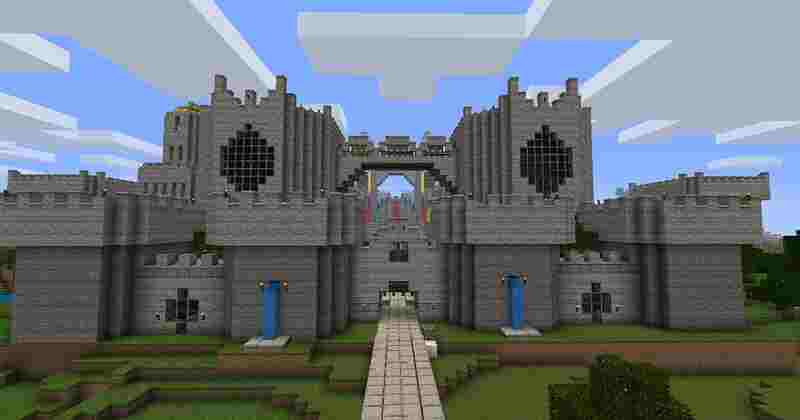

In survival mode, players have to gather natural resources such as wood and stone found in the environment in order to craft certain blocks and items. Depending on the difficulty, monsters spawn in darker areas outside a certain radius of the character, requiring players to build a shelter at night. The mode also has a health bar which is depleted by attacks from mobs, falls, drowning, falling into lava, suffocation, starvation, and other events. Players also have a hunger bar, which must be periodically refilled by eating food in-game (except in peaceful difficulty). If the hunger bar is depleted, automatic healing will stop and eventually health will deplete. Health replenishes when players have a nearly full hunger bar or continuously on peaceful difficulty. Players can craft a wide variety of items in Minecraft. Craftable items include armour, which mitigates damage from attacks; weapons (such as swords or axes), which allows monsters and animals to be killed more easily; and tools (such as pickaxes or hoes), which break certain types of blocks more quickly. Some items have multiple tiers depending on the material used to craft them, with higher-tier items being more effective and durable. Players can construct furnaces, which can cook food, process ores, and convert materials into other materials. Players may also exchange goods with a villager (NPC) through a trading system, which involves trading emeralds for different goods and vice versa. The game has an inventory system, allowing players to carry a limited number of items. Upon dying, items in the players' inventories are dropped unless the game is reconfigured not to do so. Players then re-spawn at their spawn point, which by default is where players first spawn in the game and can be reset by sleeping in a bed (in the overworld) or using a respawn anchor (in the Nether). Dropped items can be recovered if players can reach them before they disappear or despawn after 5 minutes. Players may acquire experience points by killing mobs and other players, mining, smelting ores, breeding animals, and cooking food. Experience can then be spent on enchanting tools, armour and weapons. Enchanted items are generally more powerful, last longer, or have other special effects.
In creative mode, players have access to nearly all resources and items in the game through the inventory menu and can place or remove them instantly. Players can toggle the ability to fly freely around the game world at will, and their characters do not take any damage and are not affected by hunger. The game mode helps players focus on building and creating projects of any size without disturbance.
Minecraft includes other game modes such as spectator mode, which allows players to fly through blocks. Hardcore mode is a survival mode variant in which, upon death, the player may only view the world in spectator mode or return to the game’s menu. This is only available in Java edition, however. Adventure mode is a survival mode variant with possible restrictions added by a creator of a map.
